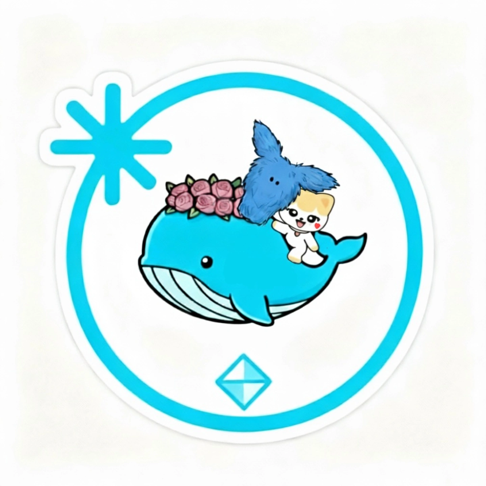

極度不專業KPOP飯
戴上耳機，這裡是專屬於 tripleS、DAY6、NMIXX 與 IVE 的狂熱集散地。紀錄那些在螢幕前應援、剪輯影片與敲打韓文單字的日常。
Instagram 精選
@極度不專業KPOP飯 ↗


YouTube
Most Viewed Video 🏆
 Shorts 精選
Shorts 精選

251206 CORTIS (코르티스) - GO!【Asia Artist Award 2025 in KAOHSIUNG】

251206 ALLDAY PROJECT - FAMOUS【Asia Artist Award 2025 in KAOHSIUNG】

260307 "Shoot Me" 合唱 | DAY6 singing "Shoot Me" with My Day in TAIPEI

251206 NEXZ(넥스지) - Beat-Boxer【Asia Artist Award 2025 in KAOHSIUNG】

薛將軍才藝+1😂#NMIXX #sullyoon #설윤 #haewon #해원

251206 CRAVITY (크래비티) - Lemonade Fever【Asia Artist Award 2025 in KAOHSIUNG】

250906 KiiiKiii - GROUNDWORK (short ver.)
👍 推薦影片

260228 tripleS neptune (트리플에스) - Fly Up【2026 tripleS Concert ﹤My Secret New Zone﹥ in Taipei】

260228 tripleS (트리플에스) - Girls Never Die + 깨어(Are You Alive)【tripleS ﹤My Secret New Zone﹥ in Taipei】

260228 tripleS zenith (트리플에스) - Q&A【2026 tripleS Concert ﹤My Secret New Zone﹥ in Taipei】

260307 DAY6 (데이식스) - Shoot Me【DAY6 10th Anniversary Tour ＜The DECADE＞ in TAIPEI】

260307 DAY6 (데이식스) - HAPPY【DAY6 10th Anniversary Tour ＜The DECADE＞ in TAIPEI】

260307 DAY6 (데이식스) - 한 페이지가 될 수 있게 Time of Our Life【DAY6 10th Anniversary Tour＜The DECADE＞in TAIPEI】
精選播放清單